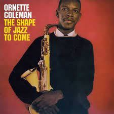

Ficha del Disco

A muchos podrá gustarle o no pero en todos los sentidos, este disco fue un parteaguas,
un antes y un después en toda la historia del jazz.
Por: Axel Ricardo Ruiz Vigo
Ficha del Disco
A muchos podrá gustarle o no pero en todos los sentidos, este disco fue un parteaguas,
un antes y un después en toda la historia del jazz.
Ficha del Disco

¿Hasta que punto puede enaltecer el arte a un ser humano? ¿Hasta qué punto puede transformar la mente, el alma,
el espíritu de una persona? Es difícil asegurar si su obra corresponde a un estado de consciencia musical
más allá de lo que podemos comprender.
Ficha del Disco
La segregación racial entre los años cincuenta y sesenta en los EE.UU. supuso una gran desigualdad social entre blancos y negros,
si bien tenían los mismos derechos, la calidad claramente no era la misma, no existía una real libertad y los afroamericanos
poco a poco se dieron cuenta de que ni en su propia música eran completamente libres, eso dió origen al Free Jazz